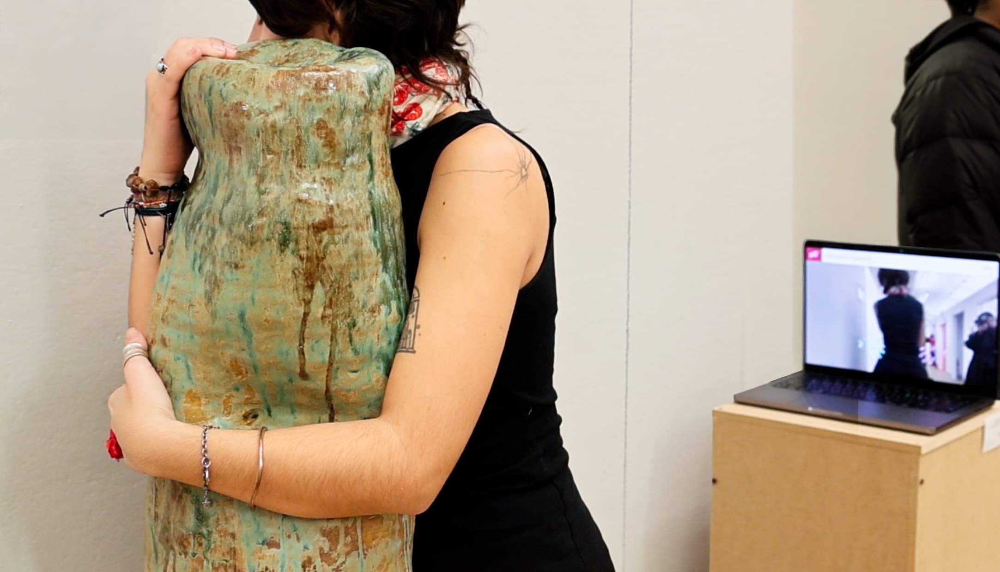
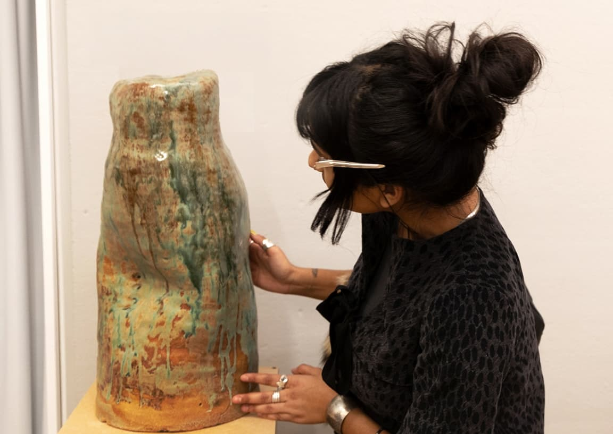
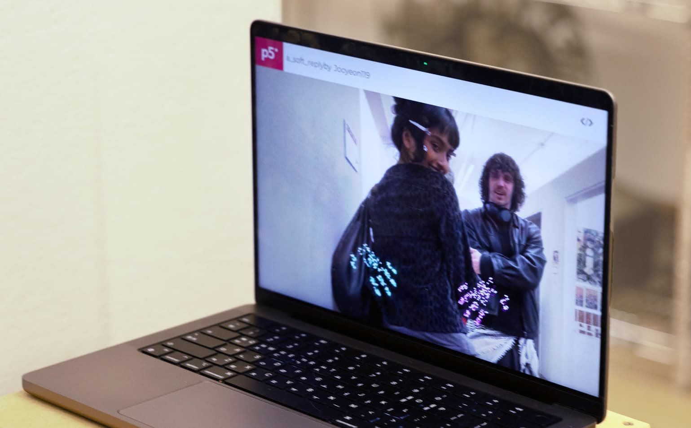
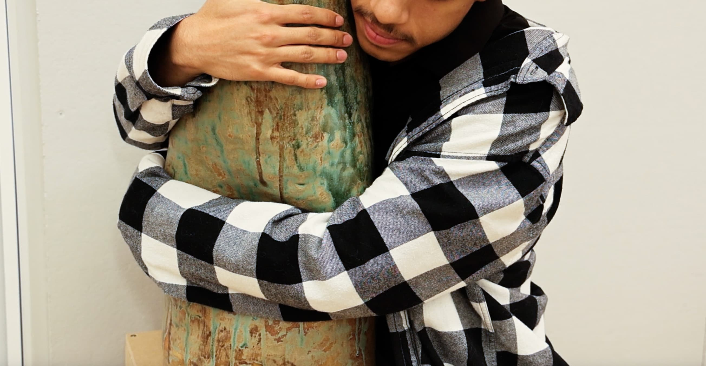
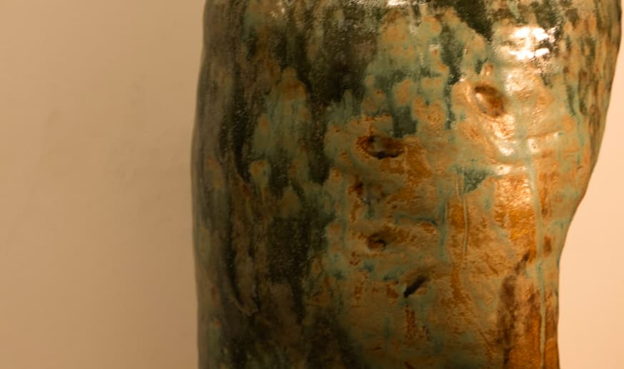
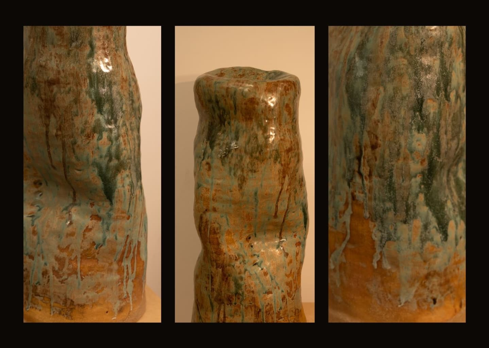

A half-human ceramic form, bearing the imprint of a negative space I once held, is translated into a rigid, unresponsive body. Before touching it, viewers are unsure how it will feel to hug a ceramic body—cold, heavy, possibly uncomfortable—an object that resists the softness usually associated with comfort. And yet, they approach it with an instinctive desire for attachment: the simple, almost universal longing to be soothed by the act of hugging.
When they wrap their arms around the cool ceramic surface, they encounter a moment of emotional fracture. The material does not warm, soften, or yield. It does not respond. It stages the gap between what we hope intimacy will offer and what the world sometimes returns: silence, coldness, absence.
Yet the work does not end there.
A live webcam, positioned behind the sculpture, captures the act of hugging, and on a nearby screen faint hands appear, gently patting the viewer’s back in response. The body receives a reply—but not from where it expected.
For many participants, this moment is unexpectedly comforting. What begins as uncertainty shifts into relief. The delayed and displaced tenderness transforms the initial disappointment into a different kind of care—one that arrives indirectly and belatedly.
By separating touch from response, the work asks viewers to reconsider how comfort is mediated, how affection circulates, and how longing can still be acknowledged even when the object of desire remains still.





